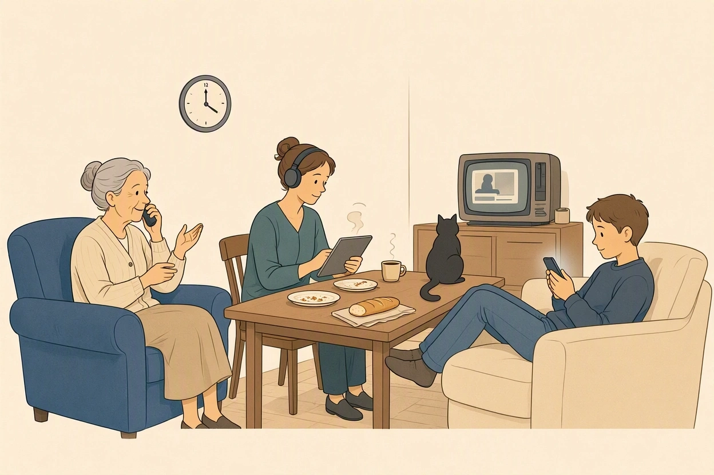

A2
moimaintenant · public
0 / 150
Sur l'écran, devant la télé ou au téléphone ?
A. Devine : combien de temps par jour est-ce que tu passes sur ton téléphone ? Bouge le curseur. Puis regarde ton temps d'écran dans les réglages de ton téléphone. Tu avais raison ?
B. Réponds aux questions.
A. Regarde l'image. Où sont ces personnes ? Qui est-ce ? Qu'est-ce qu'elles font ? Décris l'image.

B. Le titre de la leçon est « Générations déconnectées ». À ton avis, qu'est-ce que ça veut dire ? Choisis une idée et explique avec « Je pense que… parce que… ».
C. Et toi, qu'en penses-tu ?
A. Associe. Clique sur un verbe, puis sur la bonne fin de phrase.
B. Trouve l'intrus dans chaque groupe. Explique pourquoi.
Une journaliste visite la famille Martin, à Nantes.
A. Écoute une première fois. Quelle phrase résume le reportage ?
B. Écoute encore. Qui fait quoi ? Coche les cases. Attention : parfois, il y a deux personnes.
| Qui… | Josette | Nathalie | Hugo |
|---|
A. Lis ces phrases du reportage. Observe les mots en couleur, puis trouve la règle.
Je passe trois heures par jour sur mon téléphone.Hugo
Je passe des heures à scroller sur TikTok.Hugo
Je lis les actualités sur Internet.Nathalie
Je regarde des séries sur ma tablette.Nathalie
Le soir, je suis devant la télé.Josette
Je passe des heures au téléphone avec ma sœur.Josette
B. Chaque phrase a une erreur. Trouve-la et écris la phrase correcte.
A. Hugo ne répond pas. Josette lui envoie un message vocal. Complète la transcription avec sur, devant, au ou à.
B. Ta journée numérique. Écris une phrase pour chaque moment de ta journée avec passer + durée + sur / devant / au + à + infinitif.
Exemple : Le matin, je passe vingt minutes sur Instagram à regarder des stories.
Puis lis ta journée à ton professeur. Il pose deux questions. Exemple : « Et le soir, tu es devant la télé ou sur ton téléphone ? »
A. Les Français et les écrans. Devine le bon chiffre, puis clique pour vérifier.
À l'école : depuis septembre 2025, le téléphone portable est interdit à l'école primaire et au collège. C'est la « pause numérique » : les élèves laissent leur téléphone dans un casier ou une pochette.
Au travail : depuis 2017, les salariés ont le « droit à la déconnexion » : le soir et le week-end, ils ne sont pas obligés de répondre aux messages du travail.
Chiffres : Baromètre du numérique 2025 (Arcep, Arcom, Credoc).
B. Jeu de rôle : le dimanche déconnecté. C'est dimanche, la famille Martin déjeune chez Josette. Mamie veut zéro écran toute la journée. Hugo, lui, ne veut pas laisser son téléphone. Discutez et trouvez un accord. Choisissez ensemble trois règles pour la charte de la famille.
Tu attends un message important de tes amis. Tu veux poster une vidéo de skate cet après-midi. Mais tu aimes beaucoup ta grand-mère… Propose des solutions.
Pour toi, le dimanche, c'est sacré : on mange, on parle, on joue aux cartes. Tu acceptes un peu d'écran… mais seulement si Hugo fait un effort.
A. Écris un post de 150 caractères maximum : une chose que tu fais souvent sur ton téléphone et une chose que tu veux faire sans écran cette semaine. Utilise sur, devant ou au.
A. Fais des phrases avec les éléments. Ajoute sur, devant, au ou à. Conjugue les verbes.
Exemple : Mamie / parler une heure / téléphone / avec sa sœur → Mamie parle une heure au téléphone avec sa sœur.
B. Mini-enquête : une autre génération.
Interviewe une personne d'une autre génération : tes parents, tes grands-parents, un voisin ou un collègue. Pose-lui ces quatre questions (en russe ou en français, comme tu veux) :
Puis enregistre un message vocal en français (1 à 2 minutes) : présente ses habitudes et compare-les avec les tiennes. On l'écoute ensemble au prochain cours !